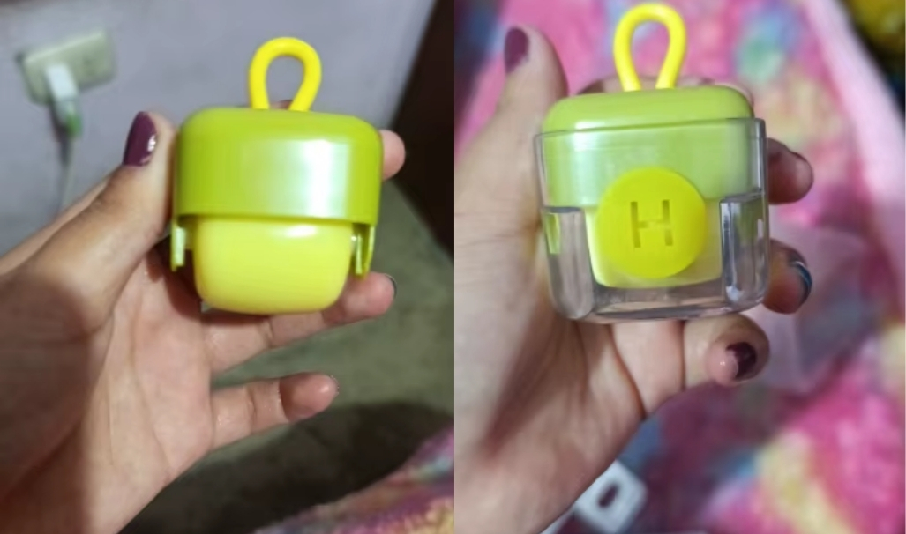

SALUD Y FAMILIA
Lo que los expertos descubren sobre la convivencia de bebés y mascotas — y cómo reducir el riesgo sin tener que alejar a tu gato.
El pelo de gato está estadísticamente asociado con el riesgo de asma infantil, según nuevos estudios.
Durante años se ha repetido el debate: ¿los bebés pueden convivir con mascotas?
Un estudio reciente publicado en Frontiers in Allergy revisó más de 60 investigaciones con casi dos millones de niños y encontró algo interesante: la exposición temprana al pelo de gato está estadísticamente asociada con un incremento altísimo en el riesgo de asma infantil.
No es una sentencia, pero sí una alarma. El pelo de las mascotas puede transportar partículas microscópicas, polvo y alérgenos que quedan en la ropa, los muebles y las cunas. Para los adultos es casi imperceptible; pero para un sistema respiratorio que apenas se está formando, puede ser un estímulo constante.
Convivir, no aislar: El nuevo enfoque pediátrico
Antes de que alguien piense en “despedirse del gato”, los mismos estudios reconocen otra cara del asunto: los animales también fortalecen el sistema inmune de los niños.
La exposición temprana a microorganismos benignos del entorno animal puede ayudar a desarrollar defensas más equilibradas. En otras palabras, el problema no es el gato, sino la acumulación de pelo que no se limpia a tiempo.
Por eso los pediatras recomiendan mantener una higiene super cuidadosa en la ropa y superficies, sobre todo en los bebes de al menos 3 años.
La historia detrás de una solución práctica
En mi casa siempre hubo gatos. Cuando nació mi sobrina, mi mamá repitió su clásica advertencia:
“Los bebés y los pelos no se mezclan.”
Durante semanas la vi pasar horas barriendo la casa, obsesionada porque no importa cuanto limpiara siempre se escabullian en la ropa los pelos del gato. Hasta que encontré algo tan simple que me hizo reír: un mini removedor de pelos que ademas era reutilizable.
Se lo compre, para que lo probará en la ropa, la cuna y el sofá, y en segundos quitaba toda los pelos que quedaban. Fue el tipo de herramienta que te hace decir “¿por qué no la conocí antes?”. Solo era lavarlo y volvia funcionar perfectamente
Desde entonces, mi gato sigue siendo parte de la familia, el bebé respira tranquilo y mi mamá duerme mejor.
La moraleja
No necesitas elegir entre tu mascota y tu tranquilidad. Solo necesitas un poco de información y una herramienta práctica.
Porque sí, los estudios existen; pero también existen formas sencillas de mantener el hogar limpio, el aire liviano y la familia unida.